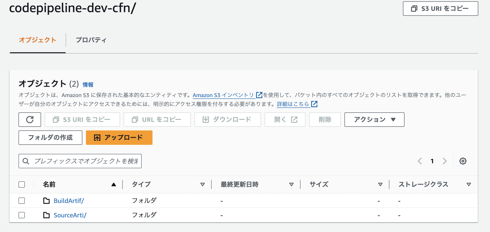
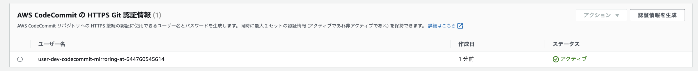
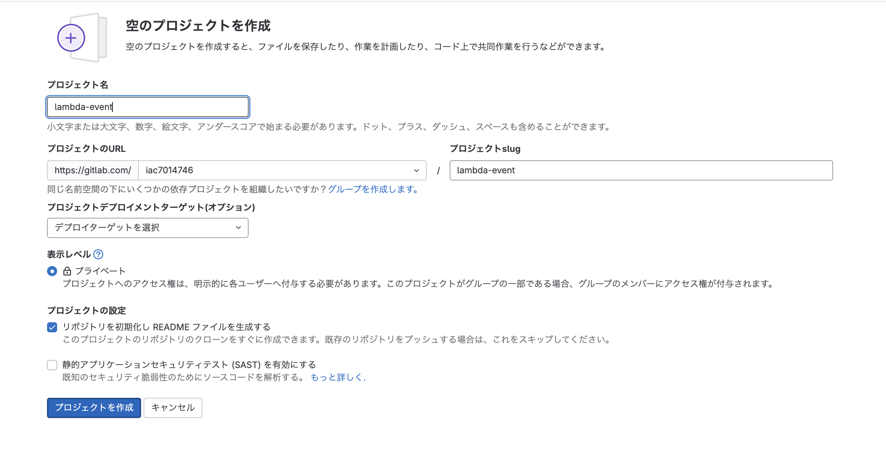
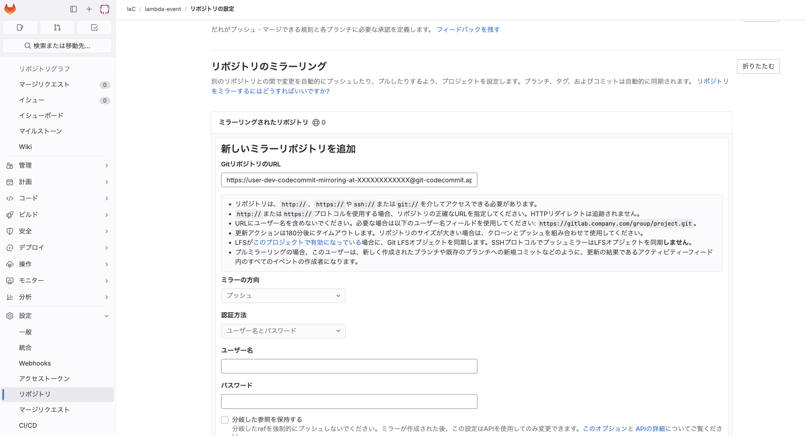
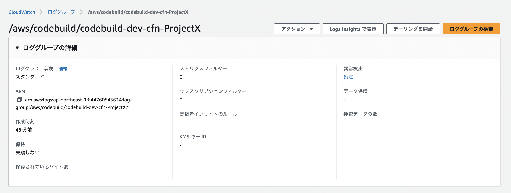
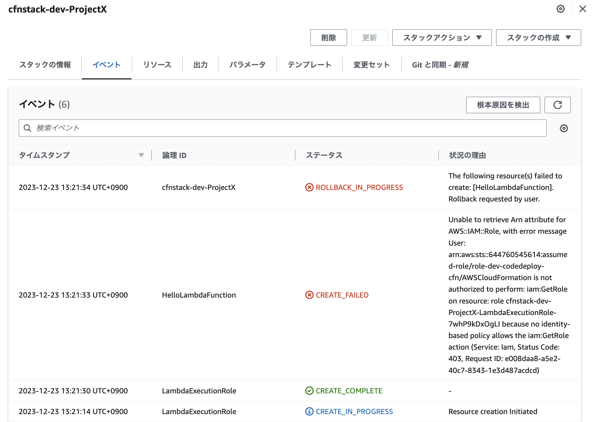

Cloudformation用のcodepipelineを作成する¶
iacを利用することで、環境の状況をコードとして記述することが可能になる。
一方で、環境が複数ある場合にどの環境にどのコードが適用されているかという管理が必要になってします。
そこで、gitlabでIaCを開発して、特定のブランチにマージすることで環境に自動でデプロイされるGitOpsを実現する。
本セクションでは、CodeSeriesをAWSに作成し、CICDの環境を整え、gitlabとCICD環境を連携する。
前提¶
前提
環境がdev/prdの2環境存在
developmentブランチにマージするとdevへリリース
masterブランチにマージするとprdへリリース
変数の前提¶
上記を踏まえ、変数とマッピングを準備しておく。
変数
EnvID
環境名を作成されるリソースに付与する
例えばdev環境に作成する場合はdevにすることで
devと名前がついたCodeSeriesが作成される
Pipelineはdevelopmentブランチを監視する
ProjectID
CFNで管理する単位を作成されるリソースに付与する
例えばSyoriAと言う名前を付与することで
SyoriAと名前がついたCodeSeriesが作成される
# ------------------------------------------------------------#
# Parameters
# ------------------------------------------------------------#
Parameters:
EnvID:
Type: String
AllowedValues: [ dev, prd ]
ProjectID:
Type: String
マッピングの前提¶
マッピング
ブランチはmasterとprd環境を紐づけている
prdと言うEnvIDを付与したときに、masterブランチを監視させる
このマッピングを利用すれば、どの環境にどのブランチを紐づけるか制御できる
Mappingが利用されているのはCodePipelineとEventの部分
# ------------------------------------------------------------#
# Mappings
# ------------------------------------------------------------#
Mappings:
BranchMap:
dev:
"name": "development"
prd:
"name": "master"
Artifact用のS3作成¶
CodePipelineで作成される、成果物（Artifact）を配置するためのS3を作成する。 デフォルト設定のS3を作成する。
S3Artifact:
Type: AWS::S3::Bucket
Properties:
BucketName: !Sub "s3-${EnvID}-codepipeline-artifact"
BucketEncryption:
ServerSideEncryptionConfiguration:
- ServerSideEncryptionByDefault:
SSEAlgorithm: 'AES256'
PublicAccessBlockConfiguration:
BlockPublicAcls: true
IgnorePublicAcls: true
BlockPublicPolicy: true
RestrictPublicBuckets: true
Tags:
-
Key: CreateBy
Value: !Ref "AWS::StackName"
CodeSeriesに付与するRole概論¶
本来はCodePipelineを作成する前に一括して、Roleを作成するべきだが、今回は、CodePipelineの各要素を説明しながら、必要なRoleを解説する。 そのため、最初にCodeSeriesを利用してCICD Pipelineを作成するにあたり、登場するRoleの役割を整理し、概論を述べておく。
ビルドステージ Role¶
Codepipelineで設定しているArtifactにアーティファクトをアップロードする必要があるため、S3へのアクセス権限が必要
CodeBuildのログをcloudwatchのloggroupに配置する必要があるので、loggroupに関する権限が必要
デプロイステージ Role¶
今回はデプロイステージがCFNなので、CFNを実行するためのRoleになる。そのため、CFNで作成するリソースに対する権限が必要になる。 気をつけなくてはいけないのは、更新やスタック作成失敗時のRollBackに備えて、リソースに対する削除の権限も付与する必要があるということである。 例えば今回は、CFNでLambdaとEventBridgeを作成する権限と削除する権限を付与する必要がある。
したがって、CFNを通じてIAM Roleを作成したい場合、デプロイステージのRoleにはIAMの作成や削除の権限を付与することになる。 強力なRoleとなるので、作成するリソース名やTagを利用したResourceの制御や運用による対応が必要になる。 運用での対応としては、CFNに関するgitlabのマージの承認やPipelineの承認については、管理者のApprovalが必要にしておくなど。
CodePipeline Role¶
パイプラインが、ソースステージ、ビルドステージ、デプロイステージの実行者となる。そのため、各ステージにおける実行権限が必要である具体的には、以下
アーティファクト
パイプラインの各ステージ間でアーティファクト（ビルドの成果物やソースコード）を一時的に格納するためのストレージを利用する
S3を指定する場合は、CodePipelineのRoleにS3に対する権限が必要
ソースステージ
CodeCommitにアクセスをcodepipelineがするので、CodeCommitに対する権限が必要
ビルドステージ
BuildProjectを事前に作成し、そのProjectを指定する形で実行する
Projectを作成する際に、ServiceRoleとしてRoleを設定するためPassRoleは不要
CodepipelineはビルドPJを指定して実行するのcodeBuildに対する権限は必要
デプロイステージ
デプロイのタイプによるが、今回はCFNを利用する
実行自体はCFNが行うので、CFNに付与するRoleで権限を管理する
codepipelineはCFNに対してRoleを指定させるので、pipelineからcfnに対するPassRoleが必要になる
codecommitの作成¶
gitlabで開発したテンプレートファイルをAWS上に同期するために、gitlabとcodecommitをミラーリングする。 ミラーリングすることで、開発自体は多機能のgitlabで行うことができる。
codecommitの作成¶
codecommit自体は、リポジトリNameを指定すれば作成される。
# --------------------------------------------------------#
# CodeCommit
# --------------------------------------------------------#
CodeCommitCFN:
Type: AWS::CodeCommit::Repository
Properties:
RepositoryName: !Sub "codecommit-${EnvID}-cfn-${ProjectID}"
RepositoryDescription: "CFn Code Repo Mirrored from GitLab"
Tags:
- Key: "CreatedBy"
Value: !Ref "AWS::StackName"
codebuildの作成¶
Codebuildの作成¶
ビルドプロジェクトを作成しておく。このビルドPJをCodePipelineから呼び出す。
Source
Type: ソースコードのタイプ、CODEPIPELINEを指定することで、CODEPIPELINEから受け取ることが設定できる
Artifacts
アーティファクトの出力先で、CODEPIPELINEを指定することで、CODEPIPELINEのAritifactへ出力する
Environment
EnvironmentVariables：buildspec.yamlなどに渡す環境変数
LogsConfig
ログの配信場所で、S3やloggroupが設定できる
CodeBuildProjectCFN:
Type: "AWS::CodeBuild::Project"
Properties:
Name: !Sub "codebuild-${EnvID}-cfn-${ProjectID}"
Source:
InsecureSsl: false
Type: "CODEPIPELINE" #CODEPIPELINEを指定することで、SourceをPipelineから受け取る
Artifacts:
EncryptionDisabled: false
Name: !Sub "codebuild-${EnvID}-cfn-${ProjectID}"
Packaging: "NONE"
Type: "CODEPIPELINE" #CODEPIPELINEを指定することで、Artifactがpipelineで指定したS3へ
Cache:
Type: "NO_CACHE"
Environment:
ComputeType: "BUILD_GENERAL1_SMALL"
EnvironmentVariables: #環境変数は、buildspec.yamlなどで受け取ることができる
-
Name: "EnvID"
Type: "PLAINTEXT"
Value: !Ref EnvID
-
Name: "AccountId"
Type: "PLAINTEXT"
Value: !Ref AWS::AccountId
Image: "aws/codebuild/standard:5.0"
ImagePullCredentialsType: "CODEBUILD"
PrivilegedMode: true
Type: "LINUX_CONTAINER"
ServiceRole: !Sub "arn:${AWS::Partition}:iam::${AWS::AccountId}:role/role-${EnvID}-codebuild-cfn" #CodeBuildで利用するRole
TimeoutInMinutes: 60
QueuedTimeoutInMinutes: 480
EncryptionKey: !Sub "arn:${AWS::Partition}:kms:${AWS::Region}:${AWS::AccountId}:alias/aws/s3"
BadgeEnabled: false
LogsConfig:
CloudWatchLogs:
Status: "ENABLED"
S3Logs:
Status: "DISABLED"
EncryptionDisabled: false
Visibility: "PRIVATE"
Tags:
- Key: "CreatedBy"
Value: !Ref "AWS::StackName"
codebuild用のIAMRole作成¶
Roleを引き受けるのは、codebuild
# Role
CodeBuildCFnRole:
Type: AWS::IAM::Role
Properties:
Path: "/"
RoleName: !Sub "role-${EnvID}-codebuild-cfn"
AssumeRolePolicyDocument:
Version: 2012-10-17
Statement:
-
Effect: Allow
Principal:
Service:
- codebuild.amazonaws.com
Action:
- sts:AssumeRole
MaxSessionDuration: 3600
ManagedPolicyArns:
- !Ref CodeBuildCFnPolicy
Description: "CodeBuild Base Role"
Tags:
-
Key: CreatedBy
Value: !Ref "AWS::StackName"
ログを作成するので、ログに対する権限
S3にArtifactを配信するので、S3に対する権限
CodeBuildCFnPolicy:
Type: "AWS::IAM::ManagedPolicy"
Properties:
ManagedPolicyName: !Sub "policy-${EnvID}-codebuild-cfn"
Path: "/"
PolicyDocument:
Version: "2012-10-17"
Statement:
-
Effect: Allow
Action:
- logs:CreateLogGroup
- logs:CreateLogStream
- logs:PutLogEvents
Resource: "*" #本来はBuildの出力先であるloggroupに絞る
-
Effect: Allow
Action:
- s3:ListBucket
- s3:PutObject
- s3:GetObject
- s3:GetObjectVersion
- s3:GetBucketAcl
- s3:GetBucketLocation
Resource:
- !Sub "arn:aws:s3:::s3-${EnvID}-codepipeline-artifact" #Codepipelineで指定したArtifactの出力先であるS3に絞る
- !Sub "arn:aws:s3:::s3-${EnvID}-codepipeline-artifact/*" #Codepipelineで指定したArtifactの出力先であるS3に絞る
Description: ""
codepipelineの作成¶
Pipelineの設定¶
ArtifactStoreで、各ステージの成果物を配置するストレージを指定する。今回はS3を指定。
CodePipelineCFN:
Type: "AWS::CodePipeline::Pipeline"
Properties:
Name: !Sub "codepipeline-${EnvID}-cfn-${ProjectID}"
RoleArn: !Sub "arn:${AWS::Partition}:iam::${AWS::AccountId}:role/role-${EnvID}-codepipeline-cfn"
ArtifactStore:
Location: !Sub "s3-${EnvID}-codepipeline-artifact"
Type: "S3"
Artifactの様子¶
Pipelineを動かすと、以下のようにS3にArtifact用のフォルダが作成される 
SourceArti: 中身を確認すると、CodeCommitに含まれるファイルがアップロードされている
BuildArti: 中身を確認すると、buildspec.yamlでArtifactとして指定したファイルがアップロードされている。
ソースステージの設定¶
ステージでは、CodeCommitを指定して、設定として、どのブランチを監視するかを指定することができる。 事前に定義しておいたマッピングにより、環境に応じて監視するブランチを設定している。
Name: "Source"
Actions:
-
Name: "Source"
ActionTypeId:
Category: "Source"
Owner: "AWS"
Provider: "CodeCommit"
Version: "1"
Configuration:
BranchName: !FindInMap [ BranchMap, !Ref EnvID, name ] #監視するブランチはMappingで定義している
OutputArtifactFormat: "CODE_ZIP"
PollForSourceChanges: "false" #今回トリガーはEvent Bridgeのためfalse
RepositoryName: !GetAtt CodeCommitCFN.Name
OutputArtifacts:
-
Name: "SourceArtifact" #ソースステージのアウトプットArtifact
Region: !Ref AWS::Region
Namespace: "SourceVariables"
RunOrder: 1
ビルドステージの設定¶
事前に作成してビルドPJを利用して実行する。
-
Name: "Build"
Actions:
-
Name: "Build"
ActionTypeId:
Category: "Build"
Owner: "AWS"
Provider: "CodeBuild"
Version: "1"
Configuration:
ProjectName: !Ref CodeBuildProjectCFN
InputArtifacts:
-
Name: "SourceArtifact"
OutputArtifacts:
-
Name: "BuildArtifact"
Region: !Ref AWS::Region
Namespace: "BuildVariables"
RunOrder: 1
承認ステージの設定¶
手動での承認プロセスを挟むことで、意図しないPushなどによるデプロイを防ぐことができる。
-
Name: "Approval"
Actions:
-
Name: "Approval"
ActionTypeId:
Category: "Approval"
Owner: "AWS"
Provider: "Manual"
Version: "1"
Region: !Ref AWS::Region
RunOrder: 1
デプロイステージの作成¶
デプロイステージでは、CFNの実行を行う。CFNを実行する際に特殊な設定としてActionModeとCapabilitiesがあるので理解しておくと良い。
Action ModeはCFNを実行する際に、すぐに更新するのか、チェンジセットを作ってから実行するかなど、実行方法を設定できる。
Capabilitiesは、CFNがリソースを制御すると言う強力な力を持っているので、勝手にIAMなどを作成しないように、CFN側でも許可する設定である。
ActionMode:CFNを実行する際のモード
CREATE_UPDATE：スタックが存在しない場合新規作成、存在する場合は更新を行う
CHANGE_SET_REPLACE：スタックとテンプレートに基づいて、変更セットを作成する
CHANGE_SET_EXECUTE：変更セットを実行する
DELETE_ONLY：指定したスタックを削除する
REPLACE_ON_FAILURE：スタックがない場合は作成、スタックが以下の状態なら削除して作成、スタックがある場合は、更新。更新ロールバックでも削除されるのでテストで利用程度
ROLLBACK_FAILED（ロールバック失敗）
CREATE_FAILED（作成失敗）
DELETE_FAILED（削除失敗）
UPDATE_ROLLBACK_FAILED（更新ロールバック失敗）
Capabilities: CFNが特定の操作を行うための必要な追加権限
CAPABILITY_IAM：CFNを利用してIAMを作成することができるようになる
CAPABILITY_NAMED_IAM：CFNを利用して、特定の名前を付与したIAMを作成することができるようになる
CAPABILITY_AUTO_EXPAND：NestedStackなどを作成することができるようになる
Name: "Deploy"
ActionTypeId:
Category: "Deploy"
Owner: "AWS"
Provider: "CloudFormation"
Version: "1"
Configuration:
ActionMode: "CREATE_UPDATE"
Capabilities: "CAPABILITY_NAMED_IAM"
# select from "CAPABILITY_IAM,CAPABILITY_NAMED_IAM,CAPABILITY_AUTO_EXPAND"
# Capabilities: "CAPABILITY_NAMED_IAM,CAPABILITY_AUTO_EXPAND" # if you need to create IAM(include custom resource name) and Nested Stack
RoleArn: !Sub "arn:${AWS::Partition}:iam::${AWS::AccountId}:role/role-${EnvID}-codedeploy-cfn"
StackName: !Sub "cfnstack-${EnvID}-${ProjectID}" #作成されるスタック名
TemplatePath: !Sub "BuildArtifact::root-stack-${ProjectID}.yaml" #実行するテンプレートファイル
TemplateConfiguration: "BuildArtifact::parameter.json" #実行時に利用するパラメータ一覧
InputArtifacts:
-
Name: "BuildArtifact"
Region: !Ref AWS::Region
Namespace: "DeployVariables"
RunOrder: 1
デプロイステージ用のIAMRole作成¶
Roleを引き受けるのは、CFN
CodeDeployCFnRole:
Type: AWS::IAM::Role
Properties:
Path: "/"
RoleName: !Sub "role-${EnvID}-codedeploy-cfn"
AssumeRolePolicyDocument:
Version: 2012-10-17
Statement:
-
Effect: Allow
Principal:
Service:
- cloudformation.amazonaws.com
Action:
- sts:AssumeRole
MaxSessionDuration: 3600
ManagedPolicyArns:
- !Ref CodeDeployCFnPolicy
Description: "CodeDeploy Base service role"
Tags:
-
Key: CreatedBy
Value: !Ref "AWS::StackName"
CFNで作成したいリソースに合わせてカスタマイズする。今回はLambdaやEventBridge、IAMを作成する予定なので、以下
lambdaとeventbridgeを作成する権限
IAMも作成したり付与したりする権限
# Policy
CodeDeployCFnPolicy:
Type: "AWS::IAM::ManagedPolicy"
Properties:
ManagedPolicyName: !Sub "policy-${EnvID}-codedeploy-cfn"
Description: ""
Path: "/"
PolicyDocument:
Version: "2012-10-17"
Statement:
- Effect: Allow
Action: #CodePipelineを通じて、作成するリソースに関する権限に限定(権限が強力になるので運用に注意)
- 'iam:GetRole' #Roleの情報を取得
- 'iam:CreateRole' #Roleを作成
- 'iam:DeleteRole' #Roleを削除
- 'iam:AttachRolePolicy' #Roleにポリシーを付与
- 'iam:DetachRolePolicy' #Roleに付与されたポリシーを外す
- 'iam:PutRolePolicy' #インラインポリシーを作成
- 'iam:DeleteRolePolicy' #インラインポリシーを削除
- 'iam:PassRole' #Roleをリソースに付与（Lambdaに付与する際に利用）
- 'lambda:GetFunction' #Lambdaの情報を取得
- 'lambda:CreateFunction' #Lambdaを作成
- 'lambda:UpdateFunctionCode' #Lambdaを更新
- 'lambda:DeleteFunction' #Lambdaを削除
- 'lambda:AddPermission' #Lambdaに対してPermissionを付与する
- 'lambda:RemovePermission' #Lambdaに対してPermissionを削除する
- 'events:DescribeRule' #Ruleの情報を取得
- 'events:PutRule' #EventRuleを作成
- 'events:DeleteRule' #EventRuleを削除
- 'events:PutTargets' #EventRuleに対するターゲットの設定
- 'events:RemoveTargets' #EventRuleに対するターゲットの削除
Resource: '*'
codedepipeline用のIAMRole作成¶
Roleを引き受けるのはCodepipeline
# ----------------------------------------------------------#
# CodePipeline
# ----------------------------------------------------------#
# Role
CodePipelineCFnRole:
Type: AWS::IAM::Role
Properties:
Path: "/"
RoleName: !Sub "role-${EnvID}-codepipeline-cfn"
AssumeRolePolicyDocument:
Version: 2012-10-17
Statement:
-
Effect: Allow
Principal:
Service:
- codepipeline.amazonaws.com
Action:
- sts:AssumeRole
MaxSessionDuration: 3600
ManagedPolicyArns:
- !Ref CodePipelineCFnPolicy
Description: "Pipeline Role for CFn Stack"
Tags:
-
Key: CreatedBy
Value: !Ref "AWS::StackName"
CodePipelineは以下を実行する
ArtifactをS3に配信
CodeCommitに対して、アクセス
CodeBuildのPJを実行
また、デプロイのタイプにより適切な権限を付与する。今回はCFNなので
CFNに対してPassRole
CFNに対する実行権限
デプロイのタイプ別に与える権限を公式サイトで整理しているのでこちらを参照すると良い。 ただし、公式ドキュメントのPassRoleの権限が強いので、以下のように、受け取るのをCFNに限定する方が良い。
# https://docs.aws.amazon.com/ja_jp/codepipeline/latest/userguide/security-iam.html#how-to-custom-role
CodePipelineCFnPolicy:
Type: "AWS::IAM::ManagedPolicy"
Properties:
ManagedPolicyName: !Sub "policy-${EnvID}-codepipeline-cfn"
Description: ""
Path: "/"
PolicyDocument:
Version: "2012-10-17"
Statement:
- #ArtifactのためのS3に対する権限
Effect: Allow
Action:
- s3:PutObject
- s3:GetObject
- s3:GetObjectVersion
- s3:GetBucketAcl
- s3:GetBucketLocation
Resource:
- !Sub "arn:aws:s3:::s3-${EnvID}-codepipeline-artifact" #対象のバケットに絞る
- !Sub "arn:aws:s3:::s3-${EnvID}-codepipeline-artifact/*" #対象のバケットに絞る
- #CodeCommitに対する権限
Effect: Allow
Action:
- codecommit:CancelUploadArchive
- codecommit:GetBranch
- codecommit:GetCommit
- codecommit:GetRepository
- codecommit:GetUploadArchiveStatus
- codecommit:UploadArchive
Resource: !Sub "arn:aws:codecommit:${AWS::Region}:${AWS::AccountId}:codecommit-${EnvID}-cfn-${ProjectID}" #対象のCodeCommitに絞る
- #CodeBuildに対する権限
Effect: Allow
Action:
- codebuild:BatchGetBuilds
- codebuild:StartBuild
Resource: !Sub "arn:aws:codebuild:${AWS::Region}:${AWS::AccountId}:project/codebuild-${EnvID}-cfn-${ProjectID}" #対象のBuildPJに絞る
- #CodePipelineがCFNに対してPassRoleの権限
Effect: Allow
Action:
- iam:PassRole
Resource:
- !GetAtt CodeDeployCFnRole.Arn #CFNに付与するRoleに絞る
Condition: #CFNだけにPassRoleするように制限
StringEqualsIfExists:
iam:PassedToService:
- cloudformation.amazonaws.com
- #CodePipelineがCFNを実行するための権限
Effect: Allow
Action:
- cloudformation:CreateStack
- cloudformation:DeleteStack
- cloudformation:DescribeStacks
- cloudformation:UpdateStack
- cloudformation:CreateChangeSet
- cloudformation:DeleteChangeSet
- cloudformation:DescribeChangeSet
- cloudformation:ExecuteChangeSet
- cloudformation:SetStackPolicy
- cloudformation:ValidateTemplate
Resource:
- "*" #本来は対象のCFNに絞る
Eventの作成¶
Eventの作成¶
EventBridgeを利用して、特定のイベントが発生したときに、指定されたターゲット（この場合はAWS CodePipeline）をトリガーする設定を行う。 今回は、codecommitの特定のブランチにUpdate（Pushやマージ）があった場合に、Pipelineを起動するように設定する。
EventsRule:
Type: AWS::Events::Rule
Properties:
Name: !Sub "event-rule-${EnvID}-codepipeline-exec-cfn-${ProjectID}"
EventPattern: # Eventをトリガーするパターン
source: #対象はcodecommit
- aws.codecommit
detail-type:
- CodeCommit Repository State Change
resources:
- !GetAtt CodeCommitCFN.Arn
detail: #対象の中でのトリガー詳細
event:
- referenceUpdated #ブランチのアップデート
referenceType:
- branch
referenceName:
- !FindInMap [ BranchMap, !Ref EnvID, name ]
Targets: #Eventが実行するのcodepipeline
- Arn: !Sub "arn:${AWS::Partition}:codepipeline:${AWS::Region}:${AWS::AccountId}:${CodePipelineCFN}"
Id: !Sub "codepipeline-${EnvID}-cfn-${ProjectID}"
RoleArn: !Sub "arn:${AWS::Partition}:iam::${AWS::AccountId}:role/role-${EnvID}-eventbridge-codepipeline-exec"
codedepipeline用のIAMRole作成¶
Roleの引き受け：Event
EventsRuleRole:
Type: AWS::IAM::Role
Properties:
Path: "/"
RoleName: !Sub "role-${EnvID}-eventbridge-codepipeline-exec"
AssumeRolePolicyDocument:
Version: 2012-10-17
Statement:
-
Effect: Allow
Principal:
Service:
- events.amazonaws.com
Action:
- sts:AssumeRole
MaxSessionDuration: 3600
ManagedPolicyArns:
- !Ref EventsCodepipelineExecPolicy
Description: "Role for eventbridge codepipeline exec"
Tags:
-
Key: CreatedBy
Value: !Ref "AWS::StackName"
権限：CodePipelineを実行するための権限
EventsCodepipelineExecPolicy:
Type: "AWS::IAM::ManagedPolicy"
Properties:
ManagedPolicyName: !Sub "policy-${EnvID}-eventbridge-codepipeline-exec"
Path: "/"
PolicyDocument:
Version: "2012-10-17"
Statement:
- Effect: Allow
Action:
- codepipeline:StartPipelineExecution
Resource:
- !Sub arn:aws:codepipeline:${AWS::Region}:${AWS::AccountId}:codepipeline-${EnvID}-cfn-${ProjectID} #対象のPipelineに絞る
Description: "Policy for eventbridge codepipeline exec"
ミラーリングユーザーの作成¶
codecommitとgitlabをミラーリングさせるために認証設定が必要となる。 具体的には、codecommitへのアクセス権限のみを持つIAMポリシーを作成し、このポリシーのみをもつIAMユーザーを作成します。
CodeCommitUser:
Type: 'AWS::IAM::User'
Properties:
UserName: !Sub 'user-${EnvID}-codecommit-mirroring'
Tags:
- Key: "CreatedBy"
Value: !Ref "AWS::StackName"
CodeCommitPolicy:
Type: 'AWS::IAM::Policy'
Properties:
PolicyName: !Sub 'policy-${EnvID}-codecommit-mirroring'
PolicyDocument:
Version: '2012-10-17'
Statement:
- Effect: 'Allow'
Action:
- 'codecommit:GitPull'
- 'codecommit:GitPush'
Resource: '*'
Users:
- !Ref CodeCommitUser
このユーザーで認証情報を払い出し、この認証情報をgitlab側に設定することで、gitlabで加えられた変更をcodecommitに反映することができる。
codecommit用の認証情報払い出し方法は以下でPasswordは自分でメモしておく。
また、IAMUserのスタックを削除する際に、払い出した情報が残っていると削除に失敗するので、削除する場合は、先に消しておく。
aws iam create-service-specific-credential --user-name <User_Name> --service-name codecommit.amazonaws.com
aws iam create-service-specific-credential --user-name user-dev-codecommit-mirroring --service-name codecommit.amazonaws.com
{
"ServiceSpecificCredential": {
……
"ServiceName": "codecommit.amazonaws.com",
"ServiceUserName": "xxxxxxxxxxxx",
"ServicePassword": "xxxxxxxxxxxx",
……
}
}

ミラーリング設定¶
gitlabのリポジトリ作成¶
lambdaとEventBridgeを作成するので、lambda-eventと言うリポジトリを作成する。 このリポジトリに、lambdaとEventBridgeを作成するテンプレートファイルを格納していく。

ローカルでの開発準備¶
ローカルで開発をしていくために作成したPJをローカルにCloneする。 監視するBranchを作成してremoteにpushしておく。例えば、developmentBranchを監視させる場合は、developmentBranchを切って、Pushしておく。
ミラーリング設定¶
codecommitでHTTPSのURLを取得し、CodeCommitのミラーリング用のIAMユーザーで作成したServiceUserName@をhtts://の後ろに挿入
# 取得したHTTPSのgitURL
https://git-codecommit.ap-northeast-1.amazonaws.com/v1/repos/codecommit-dev-cfn-ProjectX
# 挿入後
https://user-dev-codecommit-mirroring-at-XXXXXXXXXXXX@git-codecommit.ap-northeast-1.amazonaws.com/v1/repos/codecommit-dev-cfn-ProjectX
gitlab側で、設定からミラーリポジトリを開いて、各種情報を設定してミラーリングを行う。 
URL：上記で作成した挿入後のURL
ユーザー名：ServiceUserName
パスワード：ServicePassword
ミラーリング設定を行なったら、gitlabでミラーリングの更新ボタンを押下すると、codecommit側にgitlabの中身が確認できる。
ログ設計¶
Buildのログ¶
デフォルト設定をしているので、自動でロググループが作成される。

Codedeployのログ¶
実行した際のエラーなどはCFNのイベントに出力される
